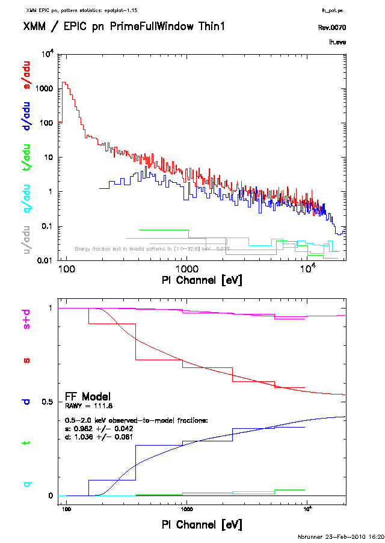
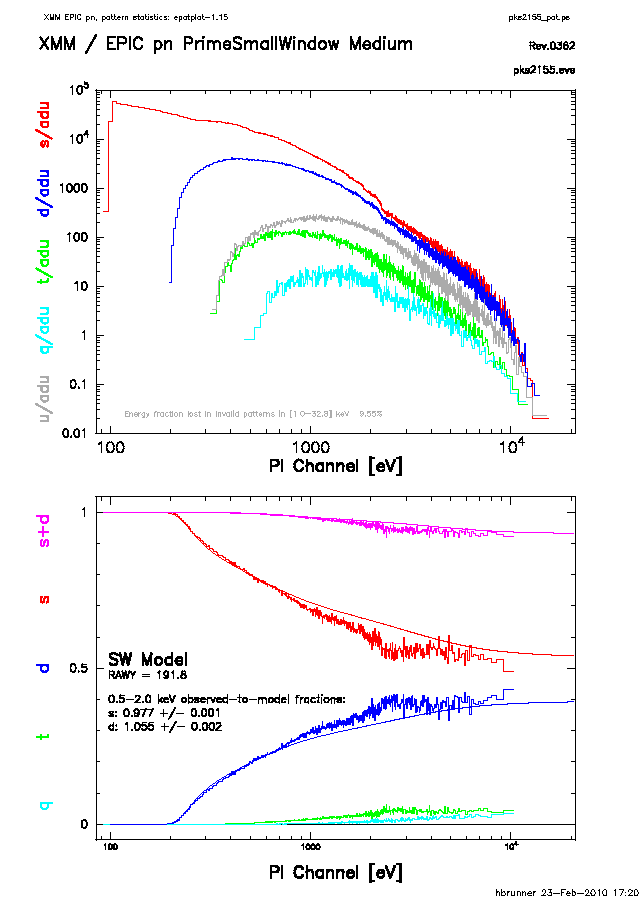
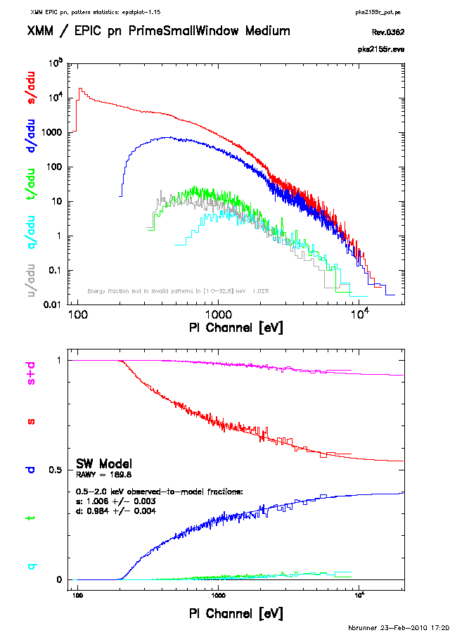

The task reads the event pattern information of an input EPIC pn or EPIC MOS
event set .
.
It creates a plot with these distributions and fractions as function of PI channel. The fraction plot also contains model curves for single and double fraction for all modes (FF, eFF, SW, LW, TI, BU) as far as they are included in the QUANTUMEF CCF files.
The models for the single and double event fractions were derived to correct for corresponding event selections which were applied in accumulating an EPIC pn spectrum. The event fractions are included in the detector response matrices. To use the standard response matrix one needs to make sure that the pattern fractions of the events in the area selected for the spectrum follow the model. The EPIC MOS model curves were provided by the hardware group at LUX.
The single and double pattern fractions are highly sensitive to
pile-up effects in bright sources and in case of deviations from the
model curves (at energies of about double the peak energy)
wrong spectral fit results are expected.
To produce pile-up free spectra the central part of the PSF
for bright point sources should be excluded, e.g. select a ring instead
of a circle via evselect.
epatplot
can then be used to
verify the event pattern
fractions in the remaining area used for the spectrum.
In addition to the patten fraction plot, task epatplot
also calculates two diagnostic numbers which may be used to
assess the presence of pile-up: In the absence of pile-up, the
0.5 - 2.0 keV observed-to-model singles and doubles pattern
fractions ratios should both be consistent with 1.0 within
statistical errors (1
in bright sources and in case of deviations from the
model curves (at energies of about double the peak energy)
wrong spectral fit results are expected.
To produce pile-up free spectra the central part of the PSF
for bright point sources should be excluded, e.g. select a ring instead
of a circle via evselect.
epatplot
can then be used to
verify the event pattern
fractions in the remaining area used for the spectrum.
In addition to the patten fraction plot, task epatplot
also calculates two diagnostic numbers which may be used to
assess the presence of pile-up: In the absence of pile-up, the
0.5 - 2.0 keV observed-to-model singles and doubles pattern
fractions ratios should both be consistent with 1.0 within
statistical errors (1  errors are given). If pile-up is
present, the singles ratio will be smaller than 1.0 and the doubles
ratio will be larger than 1.0. The two numbers are printed both to the
console and on the plot and are appended to the input event set
as attributes SNGL_OTM and DBLE_OTM (1
errors are given). If pile-up is
present, the singles ratio will be smaller than 1.0 and the doubles
ratio will be larger than 1.0. The two numbers are printed both to the
console and on the plot and are appended to the input event set
as attributes SNGL_OTM and DBLE_OTM (1  errors: ESGL_OTM and
EDBL_OTM).
Note, that low energy background noise may also result in deviations
from the pattern fraction model curves in the epatplot
plots
at energies below several hundered
eV. This effect can be avoided if background subtracted pattern
fractions are determined (parameter withbackgroundset=Y).
errors: ESGL_OTM and
EDBL_OTM).
Note, that low energy background noise may also result in deviations
from the pattern fraction model curves in the epatplot
plots
at energies below several hundered
eV. This effect can be avoided if background subtracted pattern
fractions are determined (parameter withbackgroundset=Y).
|  |
|  |
|  |
There is a slight indication that at very large offaxis-angles (well, close to the readout-nodes = CAMEX) singles are reduced and doubles increased as the noise is much higher there. If the target source is at the nominal position - close to the center of the FOV - this does not matter, for serendipitous (weak) off-axis sources the intensity may be too low anyway for significant effects on the pattern distribution. Differences may be visible if you have a bright source close to the CAMEX. For EPIC pn the task takes into account the spatial dependence of the pattern fractions.
The default behaviour is to select only events with FLAG, this can be changed via setting withflag=N (default: Y). Invalid EPIC pn patterns are also shown to indicate how much energy is lost by pattern pile-up.
If one is interested in the spatial distribution of
events with intrinsic FLAG=0 then set withoutputmask=Y:
This reads the bad pixel extension(s) and the offset column extension(s)
and creates a CCD map where all regions are set to 0 that have an
intrinsic value of FLAG , i.e. events on bad (hot, dead, etc.)
pixels, next to bad pixels, out of the FOV, close to the read-out window,
on and next to offset columns. If the task finds an extension BADPIX
then it assumes that this is an intermediate single chip event file
as created during the pn chain processing, it tries to determine the
relevant CCD number from the FITS header to set the FOV accordingly.
If it finds extensions of the form BADPIXnn it takes nn
as the CCD number. If no bad pixel extension is found at all the
setting withoutputmask=Y is completely ignored as then the task
cannot reliably determine the bad pixel contents of the file.
Similarly for intermediate single chip files OFFSETCO and OFFSETS
are accepted, for final event lists and products derived from those
OFFSETnn and OFFSETS are read (the latter is then searched for
the CCD number column). If no offset extension is found these flags are not
used for the output map as this information cannot be reliably retrieved
from the events file in general. An event file (final or intermediate)
produced with epchain
should have all the relevant information
incluced (if not explicitly switched off, of course).
The parameter outmaskname is parsed for a CCD number placeholder
(##), if not found then the corresponding CCD number is appended to
this parameter value (it cannot be predicted a priori how many output
maps have to be created).
, i.e. events on bad (hot, dead, etc.)
pixels, next to bad pixels, out of the FOV, close to the read-out window,
on and next to offset columns. If the task finds an extension BADPIX
then it assumes that this is an intermediate single chip event file
as created during the pn chain processing, it tries to determine the
relevant CCD number from the FITS header to set the FOV accordingly.
If it finds extensions of the form BADPIXnn it takes nn
as the CCD number. If no bad pixel extension is found at all the
setting withoutputmask=Y is completely ignored as then the task
cannot reliably determine the bad pixel contents of the file.
Similarly for intermediate single chip files OFFSETCO and OFFSETS
are accepted, for final event lists and products derived from those
OFFSETnn and OFFSETS are read (the latter is then searched for
the CCD number column). If no offset extension is found these flags are not
used for the output map as this information cannot be reliably retrieved
from the events file in general. An event file (final or intermediate)
produced with epchain
should have all the relevant information
incluced (if not explicitly switched off, of course).
The parameter outmaskname is parsed for a CCD number placeholder
(##), if not found then the corresponding CCD number is appended to
this parameter value (it cannot be predicted a priori how many output
maps have to be created).